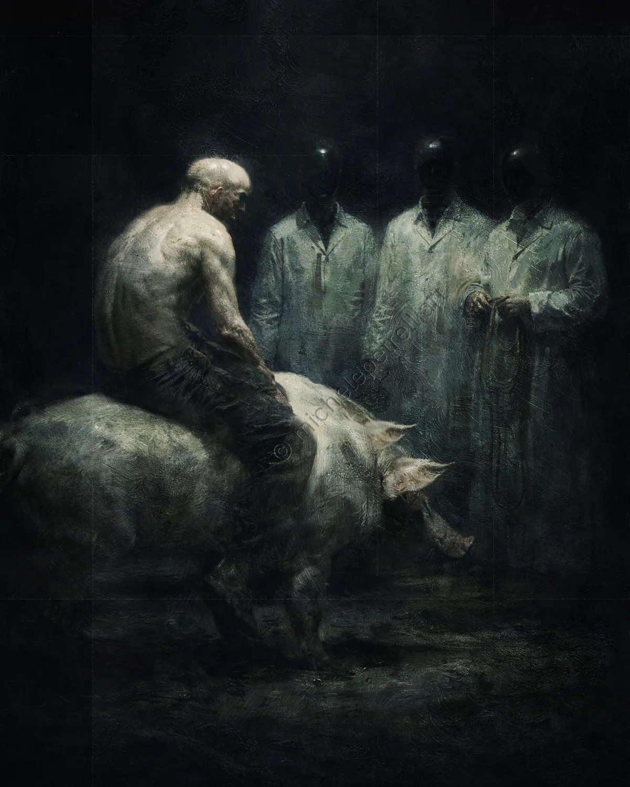

4220 This is our Horse
The human figure appears in a state of total abandonment, a mass of flesh folded upon itself, having relinquished all muscular tension. His nudity expresses a vulnerability devoid of defense, an absolute surrender to the inertia of his own skeletal structure. The skin, marked and dull, seems to absorb light without reflecting it, merging chromatically with the support that sustains it. In this position, the man ceases to be an active subject and becomes a load, a ponderous element passively resting on the back of the beast. The spine curves, yielding to gravity, eliminating any hierarchical distinction between the one occupying the upper space and the one below.
This figure sits upon a pig, a presence that roots the entire scene in the mire of biological necessity. The pig embodies the stasis of matter and the circularity of organic need. The act of occupying the back of this animal establishes a bond with the earth in its crudest form; transit is absent, replaced by permanence atop an animal nature that ignores the authority of whoever sits above it. The man renounces the reins as there is no route to impose: he acts as one weight suspended over another, carried by the involuntary movement of an organism that responds exclusively to bio-mechanical stimuli.
Consciousness occupies its own biology, a mechanism that self-perpetuates without elevated goals. Compared to a horse, which would project the illusion of a will or an escape, the pig forces a pure adherence to reality. The skin of the man and that of the animal tend toward the same material consistency, suggesting a coincidence of substance. In this arrangement, any concept of a journey vanishes: all that remains is the rigid evidence of one body upon another, a deterministic interlocking where the very notion of a passenger dissolves into the inevitability of existence.
This license does not allow you to modify or use these images for commercial purposes.
You are allowed to share them only by clearly crediting and tagging the author.